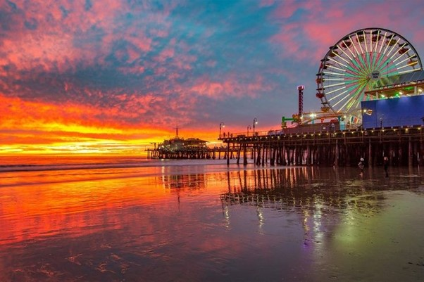
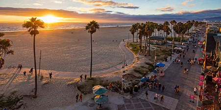

Just outside Los Angeles, Disneyland is California's premier family vacation destination, attracting visitors since the 1950s. Disneyland Park, with rides and experiences in elaborately created theme sets, is what most people picture when they imagine Disneyland. The Disneyland California Adventure Park, created during one of the expansions, holds even more action and adventure, with seven lands based on movie themes

Santa Monica
Santa Monica is a unique destination that is both chic and laid-back, with a population that ranges from surfers, skateboarders, and yoga devotees to techies and business people. The beautiful stretch of golden sand along the coast and the famous Santa Monica Pier, with its iconic Ferris wheel, are what most tourists come to enjoy, but you can find a variety of experiences in this beachfront city next to LA.
The Nethercutt Collection
If you're a fan of antique, vintage, and classic cars, this is the place to visit. The Nethercutt Collection displays an outstanding array of American and European automobiles from the 1890s to the 1990s. The pristine condition of these vehicles and the variety of models is beyond impressive. The history of the cars and descriptions of their previous owners are displayed with the vehicles.

Venice Beach
Venice Beach deserves its reputation as a place to see and be seen, making it perfect for people watching, although the area definitely has its own unique vibe. This stretch of golden sand and the Venice Beach Boardwalk are always thronged with people walking, cycling, rollerblading, and jogging